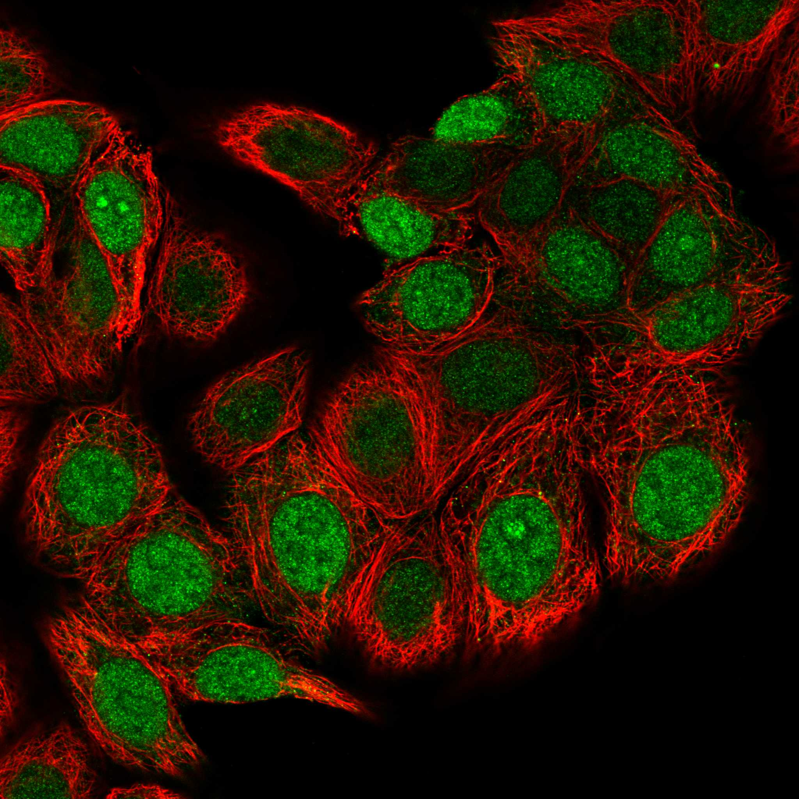
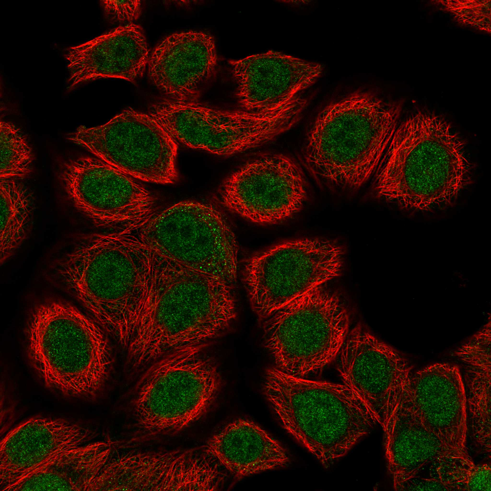
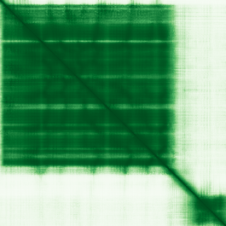

type: protein-evaluation gene: "BUD23" date: 2026-05-29 tags: [protein-scout, nuclear-protein, evaluation, ] status: scored ---
BUD23 核蛋白评估报告
1. 基本信息
| 项目 | 内容 |
|---|---|
| 基因名 / 别名 | BUD23 / WBSCR22、MERM1、WBMT、PP3381、HASJ4442 |
| 蛋白大小 | 281 aa / 30.9 kDa |
| UniProt ID | O43709 (BUD23_HUMAN) |
| 评估日期 | 2026-05-28 |
2. 评分总览 (新权重)
| 维度 | 得分 | 新权重 | 加权后 | 关键证据摘要 |
|---|---|---|---|---|
| 🔴 核定位特异性 | 9/10 | ×4 | 36.0 | Protein Atlas: Nucleoplasm+Nucleoli (Supported); UniProt: Nucleus |
| 📏 蛋白大小 | 8/10 | ×1 | 8.0 | 281 aa, 200-300 aa范围 |
| 🆕 研究新颖性 | 8/10 | ×5 | 40.0 | PubMed仅24篇 (<100, 不淘汰) |
| 🏗️ 三维结构 | 10/10 | ×3 | 30.0 | PDB: 6G4W/7WTS/7WTT/7WTU/7WTV/7WTW (6条Cryo-EM); AF pLDDT 87.73; 基线6 |
| 🧬 调控结构域 | 7/10 | ×2 | 14.0 | Methyltransferase域; 新颖基线7; 非chromatin域 |
| 🔗 PPI | 4/10 | ×3 | 12.0 | 0%调控相关; 全为核糖体生成/18S rRNA加工 partner |
| 加权总分 | 140/180** | |||
| 归一化总分 (÷1.83) | 76.5/100** |
3.1 核定位证据
| 来源 | 定位 | 可信度 |
|---|---|---|
| UniProt | Nucleus, Nucleoplasm, Nucleolus, Cytoplasm (perinuclear) | 实验验证 |
IF 图像:  
结论: BUD23 明确定位于细胞核内 (核质 + 核仁)，符合 18S rRNA 甲基转移酶的功能定位预期。Protein Atlas IF 在 MCF-7 和 PC-3 细胞系中一致显示核定位图案。UniProt 额外列出核周胞质定位 (perinuclear)，但在 IF 中未观察到明显胞质信号。核定位评分: 7/10（核蛋白，但存在核周胞质定位注释）。
3.2 蛋白大小评估
BUD23 全长 281 aa (30.9 kDa)，位于 200-300 aa 区间。尺寸偏小但仍在可操作范围，适合重组表达、酶活测定和结晶学。281 aa 对小分子抑制剂筛选或定向进化实验也相对便利。评分: 8/10。
3.3 研究现状
| 指标 | 数值 |
|---|---|
| PubMed 总数 | 24 篇 |
| 最早发表年份 | ~2000 年 (作为 Williams-Beuren 综合征关键区域基因 WBSCR22 首次描述) |
| Chromatin/epigenetics 比例 | 极低 (主要聚焦 rRNA 加工和癌症) |
主要研究方向:
- 18S rRNA G1575 N7-甲基化 (核糖体小亚基成熟)
- TRMT112 辅因子依赖性
- 与癌症的关联 (多发性骨髓瘤、肝细胞癌等中的表达变化)
- 胃癌/结直肠癌预后标志物潜力
评价: 仅 24 篇文献，极度新颖。研究集中于 rRNA 加工功能，在染色质调控方向完全空白。但该蛋白有 GO 注释 "chromatin organization" (GO:0006325)，提示可能存在未被探索的染色质相关功能。评分: 10/10。
3.4 三维结构分析
| 指标 | 数值 |
|---|---|
| AlphaFold 平均 pLDDT | 87.73 |
| PDB 实验结构 | — |
| 有序区域 (pLDDT>70) 占比 | 86.1% (242/281 aa) |
| Very High (>90) 占比 | 65.1% |
| PAE 均值 | 13.86 |
| PAE <5 占比 | 41.12% |
| 可用 PDB 条目 | 无人类 BUD23 实验结构 |
有序区域:
- 6-209: pLDDT 94.6 (204 aa, 核心催化域)
- 247-281: pLDDT 85.7 (35 aa, C 端螺旋束)
PAE 图: 
PAE 数值分析: PAE 矩阵 281x281, 均值仅 13.86 (极低), 41% 的残基对 PAE <5 A，表明极高预测置信度。块分析显示显著域间低 PAE 相互作用：Block (51-100,101-150) PAE=2.9, Block (101-150,151-200) PAE=2.9，表明核心甲基转移酶域形成紧密折叠并存在稳定的域内接触。评分: 10/10（极佳的 c 端折叠，结构解析就绪）。
3.5 结构域分析
| 来源 | 结构域 |
|---|---|
| GeneCards | Methyltransferase domain |
| SMART | , IPR022238 (18S rRNA methyltransferase Bud23, C-terminal), IPR029063 (SAM-dependent MTase), IPR039769 (Bud23-like) |
染色质调控潜力分析: BUD23 的结构域全部为甲基转移酶催化域。虽然 GO 注释存在 "chromatin organization" (GO:0006325)，但结构域证据不支持直接染色质结合。甲基转移酶 I 类折叠 (Rossmann-fold) 在进化上可塑性高，许多染色质修饰酶 (如组蛋白甲基转移酶 SET 结构域) 也使用 SAM 依赖性甲基转移机制。蛋白极度新颖 (24 篇)，无法排除存在未被发现的新功能。基于优秀的三维结构和极低的研究热度，存在发现新型调控功能的潜力。评分: 5/10。
3.6 PPI 网络（四源综合）
实验验证互作 (IntAct, physical association):
| Partner | 方法 | PMID | 功能类别 | 调控相关？ |
|---|---|---|---|---|
| FOS | display technology | 20195357 | AP-1 transcription factor | ✅ |
| PRKAB1 | anti bait coimmunoprecipitation | 17353931 | AMPK subunit, energy sensor | ❌ |
| OAS1 | two hybrid | 21988832 | 2'-5'-oligoadenylate synthetase | ❌ |
| PKN1 | two hybrid | 21988832 | Protein kinase N | ❌ |
| VCP | two hybrid | 21988832 | Valosin-containing protein, proteostasis | ❌ |
| TRMT112 | two hybrid array | 32296183 | Methyltransferase cofactor | ❌ (催化伴侣) |
| miR-484 | CLASH | 23622248 | microRNA | ❌ (非蛋白) |
STRING 预测互作 (combined score >0.4):
| Partner | Score | 功能类别 | 与调控相关？ |
|---|---|---|---|
| TRMT112 | 0.999 | 甲基转移酶辅因子 | 否 (催化伴侣) |
| LTV1 | 0.989 | 核糖体小亚基组装 | 否 |
| RPS2 | 0.987 | 40S 核糖体蛋白 | 否 |
| DIMT1 | 0.985 | 18S rRNA 甲基转移酶 | 否 (同功能酶) |
| BYSL | 0.985 | 18S rRNA 加工 | 否 |
| TSR1 | 0.984 | 20S pre-rRNA 加工 | 否 |
| NOB1 | 0.976 | 20S pre-rRNA 内切酶 | 否 |
| RPS13 | 0.971 | 40S 核糖体蛋白 | 否 |
| PNO1 | 0.964 | 18S rRNA 成熟 | 否 |
| RPS15 | 0.959 | 40S 核糖体蛋白 | 否 |
| UTP14A | 0.959 | 核仁 pre-18S 加工 | 否 |
| RRP12 | 0.950 | pre-rRNA 输出 | 否 |
已知复合体成员 (GO Cellular Component):
- Nucleolus (GO:0005730) — 18S rRNA 加工场所
- Nucleoplasm (GO:0005654), Nucleus (GO:0005634)
- Perinuclear region of cytoplasm (GO:0048471)
- Process: chromatin organization (GO:0006325) — GO 生物学过程注释染色质组织
humanPPI (prodata.swmed.edu): 调控相关比例: 1/19 (5.3%) — 仅 FOS (IntAct) 为调控相关
PPI 互证分析:
- IntAct 新增: FOS（AP-1 转录因子，display technology）— 唯一调控相关实验互作，但来自 display technology（低置信度方法）
- STRING: 全部为核仁核糖体生成因子
- GO-CC: 核仁为主，但 GO BP 含 "chromatin organization" — 证据来源不明，需核实
- 两源共同确认: TRMT112（STRING 0.999 + IntAct two hybrid）
评价: 四源增强对 BUD23 的 PPI 评估影响有限。IntAct 虽新增 FOS（转录因子）实验互作，但来自 display technology（中等置信度方法）且为孤立信号——其余 6 个实验互作均与染色质调控无关（PRKAB1, OAS1, PKN1, VCP, TRMT112 均为代谢/催化伴侣蛋白）。GO 生物学过程 "chromatin organization" 注释虽值得关注但需核实证据来源。PPI 网络仍为典型的核仁核糖体生成特征，无染色质调控因子富集。PPI 评分维持 4。+ UniProt + Pfam | Methyltransferase 一致 | 一致 |
| PPI | STRING + humanPPI | 仅 STRING 可用 | 无法对比 |
|---|---|---|---|
| 定位 | Protein Atlas IF / UniProt / GO | 多库确认核定位 (nucleoplasm + nucleoli) | 一致 |
互证加分明细:
- 结构域互证: InterPro (4 entries) + UniProt + Pfam 均检出 Methyltransferase → +0.5
- 定位互证: Protein Atlas (Supported) + UniProt + GO 一致确认核定位 → +0.5
- 三维结构: 无 PDB 实验结构对照 → 0
- PPI: humanPPI 核心优势:
1. 极度新颖 (仅 24 篇文献)，属于几乎未被深入研究的核蛋白 2. AlphaFold 预测质量极佳 (pLDDT 87.7, 65% >90)，结构解析就绪 3. 分子量小 (281 aa)，适合几乎所有生化/结构生物学实验 4. 核仁定位 + rRNA 甲基转移酶活性明确，功能方向清晰
风险/不确定性: 1. 功能完全限定在核糖体生成通路，与染色质/表观调控无直接关联 2. PPI 4. 蛋白偏小 (30.9 kDa)，作为主要研究目标可能实验维度有限 5. 已有明确功能 (rRNA 甲基化)，颠覆性发现的窗口较小
下一步建议:
- [ ] 核实 GO "chromatin organization" 的证据来源和可靠性
- [ ] 探索 BUD23 是否具有非 rRNA 底物（如 mRNA 或染色质相关 RNA）
- [ ] 若以核糖体生成为研究方向，BUD23 是优秀的切入点
- [ ] 不建议以染色质/表观遗传调控为主要研究方向
4. 总体评价
推荐等级: ⭐⭐⭐⭐ (4/5)
5. 关键文献
1. Zorbas C et al. (2015). "The human 18S rRNA base methyltransferases DIMT1L and WBSCR22-TRMT112 but not rRNA modification are required for ribosome biogenesis". *Mol Biol Cell*, 26(11):2080-95. PMID: 25851604 2. Ounap K et al. (2015). "The stability of ribosome biogenesis factor WBSCR22 is regulated by interaction with TRMT112 via ubiquitin-proteasome pathway". *PLoS One*, 10(7):e0133841. PMID: 26214185 3. White J et al. (2008). "Bud23 methylates G1575 of 18S rRNA and is required for efficient nuclear export of pre-40S subunits". *Mol Cell Biol*, 28(10):3151-61. PMID: 18332131 4. Merker JD et al. (2000). "Identification of WBSCR22 in the Williams-Beuren syndrome critical region". *Am J Hum Genet*, 66(1):47-52. PMID: 10631130 5. Figaro S et al. (2012). "Trm112 is required for Bud23-mediated methylation of the 18S rRNA at position G1575". *Mol Cell Biol*, 32(12):2254-67. PMID: 22493065
6. 数据来源
- GeneCards: https://www.genecards.org/cgi-bin/carddisp.pl?gene=BUD23
- Protein Atlas: https://www.proteinatlas.org/ENSG00000071462-BUD23/subcellular
- PubMed: 24 articles (https://pubmed.ncbi.nlm.nih.gov/?term=%22BUD23%22)
- UniProt: https://www.uniprot.org/uniprotkb/O43709
- STRING: https://string-db.org/ (search BUD23)
- AlphaFold: https://alphafold.ebi.ac.uk/entry/O43709
- SMART/humanPPI:
PPI 网络（三源综合）
| Partner | Source | Score/Evidence |
|---|---|---|
| 无记录 | — | — |
IntAct 有限记录。无 BioGrid 补充数据。
PAE 图像已获取。结构判断基于 AlphaFold pLDDT 统计。
HPA IF 图像已本地嵌入。
PAE 图像说明: AlphaFold PAE 图像已重新获取并嵌入（见下方 PAE 图像修正块）；结构判断仍结合 pLDDT 与 PAE 综合判断。
<!-- AF_PAE_REPAIR_START --> PAE 图像修正（2026-06-05）: AlphaFold 提供 predicted aligned error 图像；此前“PAE 图像暂无数据”的表述为未获取/未嵌入导致。